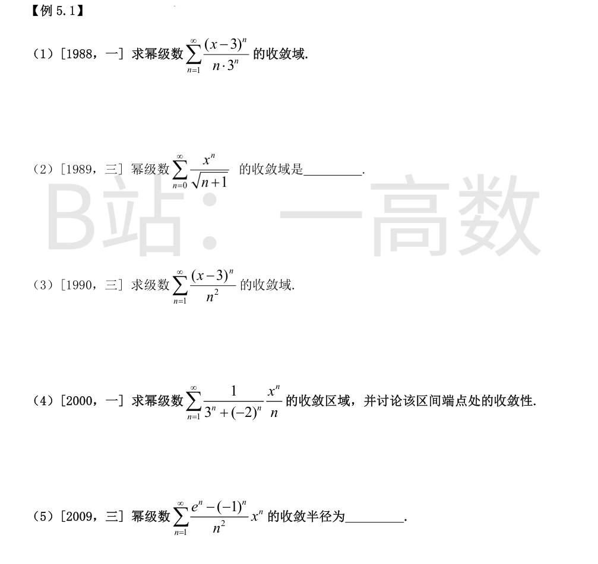
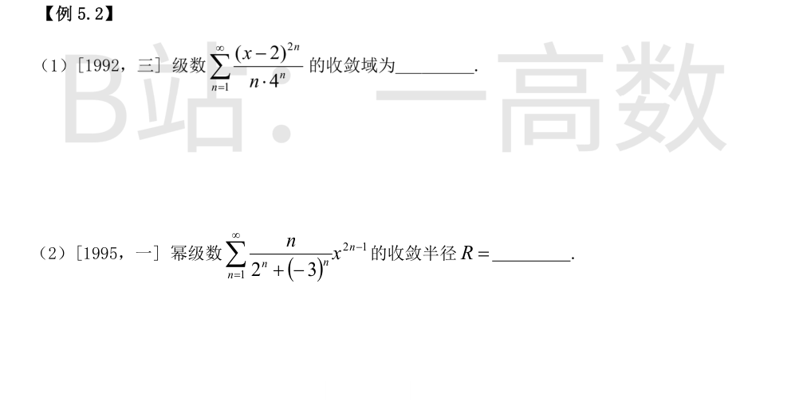
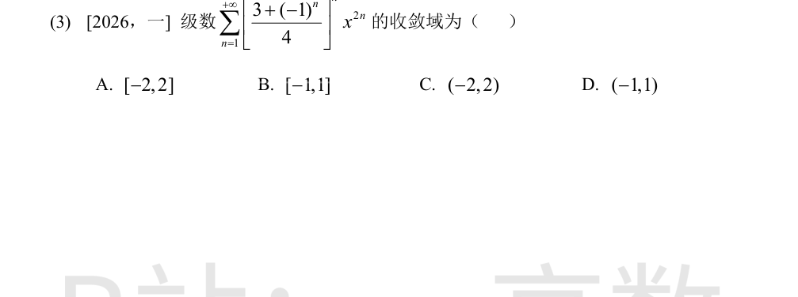
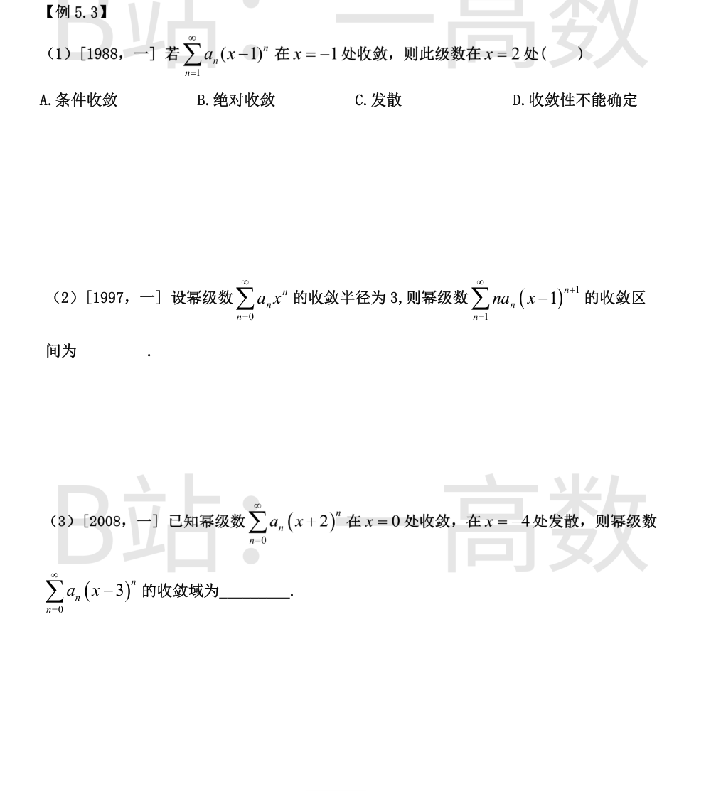
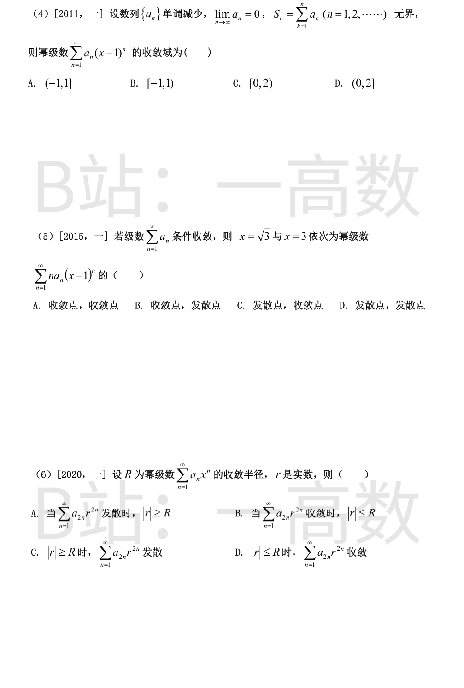

$a_n=\frac{1}{n3^n}$，$$R=\lim_{n\to\infty}\left|\frac{a_n}{a_{n+1}}\right|=\lim_{n\to\infty}\frac{(n+1)3^{n+1}}{n3^n}=3,$$收敛区间 $(3-3,3+3)=(0,6)$。端点：$x=0$ 时 $\sum\frac{(-3)^n}{n3^n}=\sum\frac{(-1)^n}{n}$，由莱布尼茨判别法收敛（条件收敛）；$x=6$ 时 $\sum\frac{3^n}{n3^n}=\sum\frac{1}{n}$ 发散。故收敛域为 $[0,6)$。
$R=\lim_{n\to\infty}\left|\frac{a_n}{a_{n+1}}\right|=\lim_{n\to\infty}\frac{\sqrt{n+2}}{\sqrt{n+1}}=1$，收敛区间 $(-1,1)$。端点：$x=1$ 时 $\sum\frac{1}{\sqrt{n+1}}$ 为 $p=\frac{1}{2}$ 的 p-级数，发散；$x=-1$ 时 $\sum\frac{(-1)^n}{\sqrt{n+1}}$ 由莱布尼茨判别法收敛（条件收敛）。故收敛域为 $[-1,1)$。
$a_n=\frac{1}{n^2}$，$R=\lim_{n\to\infty}\frac{(n+1)^2}{n^2}=1$，收敛区间 $(3-1,3+1)=(2,4)$。端点：$x=2$ 时 $\sum\frac{(-1)^n}{n^2}$ 绝对收敛；$x=4$ 时 $\sum\frac{1}{n^2}$ 收敛。故收敛域为 $[2,4]$。
记 $a_n=\frac{1}{3^n+(-2)^n}\cdot\frac{1}{n}$，$$\lim_{n\to\infty}\left|\frac{a_{n+1}}{a_n}\right|=\lim_{n\to\infty}\frac{3^n+(-2)^n}{3^{n+1}+(-2)^{n+1}}\cdot\frac{n}{n+1}=\lim_{n\to\infty}\frac{1+(-2/3)^n}{3\left[1+(-2/3)^{n+1}\right]}\cdot\frac{n}{n+1}=\frac{1}{3},$$故 $R=3$，收敛区间 $(-3,3)$。端点 $x=3$：通项 $\frac{3^n}{3^n+(-2)^n}\cdot\frac{1}{n}=\frac{1}{1+(-2/3)^n}\cdot\frac{1}{n}\sim\frac{1}{n}$，由极限比较法与调和级数同发散，故发散。端点 $x=-3$：通项 $$\frac{(-3)^n}{3^n+(-2)^n}\cdot\frac{1}{n}=\frac{(-1)^n}{1+(-2/3)^n}\cdot\frac{1}{n}=\frac{(-1)^n}{n}-\frac{(-1)^n}{n}\cdot\frac{(-2/3)^n}{1+(-2/3)^n},$$第一部分为交错调和级数（收敛），第二部分绝对值不超过 $\frac{3(2/3)^n}{n}$（收敛），故级数收敛；但 $\left|\frac{(-1)^n}{1+(-2/3)^n}\cdot\frac{1}{n}\right|\ge\frac{1}{n\left(1+\frac{2}{3}\right)}=\frac{3}{5n}$，不绝对收敛，为条件收敛。故收敛域为 $[-3,3)$。
$a_n=\frac{e^n-(-1)^n}{n^2}$，$$\frac{a_{n+1}}{a_n}=\left(\frac{n}{n+1}\right)^2\cdot\frac{e^{n+1}-(-1)^{n+1}}{e^n-(-1)^n}=\left(\frac{n}{n+1}\right)^2\cdot e\cdot\frac{1-(-1)^{n+1}e^{-(n+1)}}{1-(-1)^n e^{-n}}\longrightarrow e,$$故收敛半径 $R=\frac{1}{e}$。


令 $t=(x-2)^2\ge 0$，级数化为 $\sum\frac{t^n}{n4^n}$，对 t 的收敛半径为 $R_t=\lim\frac{n4^n}{(n+1)4^{n+1}}=\frac{1}{4}$ 的倒数即 4；且 $t=4$ 时 $\sum\frac{4^n}{n4^n}=\sum\frac{1}{n}$ 发散。故收敛条件为 $(x-2)^2<4\iff|x-2|<2$，而 $x=0$、$x=4$（即 $t=4$）处发散。收敛域为 $(0,4)$。
级数只含奇次幂，用相邻两项之比：$$\left|\frac{u_{n+1}}{u_n}\right|=\frac{n+1}{n}\cdot\left|\frac{2^n+(-3)^n}{2^{n+1}+(-3)^{n+1}}\right|\cdot x^2\longrightarrow\frac{x^2}{3},$$其中 $\left|2^n+(-3)^n\right|=3^n\left|1+\left(-\frac{2}{3}\right)^n\right|$ 以 $3^n$ 为主部，故比值极限为 $\frac{n+1}{n}\cdot\frac{1}{3}\cdot x^2\to\frac{x^2}{3}$。当 $\frac{x^2}{3}<1$ 即 $|x|<\sqrt{3}$ 时收敛；$|x|>\sqrt{3}$ 时通项不趋于 0，发散。故收敛半径 $R=\sqrt{3}$。
$\frac{3+(-1)^n}{4}=\begin{cases}1, & n\text{ 为偶},\\ \dfrac{1}{2}, & n\text{ 为奇},\end{cases}$ 故原级数 $=\sum_{m\ge 1}x^{4m}+\frac{1}{2}\sum_{m\ge 0}x^{4m+2}$。当 $|x|<1$ 时两个几何型级数都绝对收敛。当 $|x|>1$ 时通项不趋于 0；当 $x=\pm 1$ 时通项 $x^{2n}\cdot\frac{3+(-1)^n}{4}$ 在 1 与 $\frac{1}{2}$ 之间交替，也不趋于 0，发散。故收敛域为开区间 $(-1,1)$，选 D。


级数中心为 $x=1$。$x=-1$ 与中心的距离为 2，由阿贝尔定理，收敛点与中心的最大距离给出收敛半径 $R\ge 2$。$x=2$ 与中心的距离为 $1<R$，位于收敛区间内部，幂级数在收敛区间内部处处绝对收敛。选 B。
幂级数逐项求导（或系数乘 n）不改变收敛半径，故 $\sum_{n=1}^{\infty}n a_n x^{n+1}$ 的收敛半径仍为 3。新级数中心在 $x=1$，故收敛区间为 $(1-3,1+3)=(-2,4)$。
对 $\sum a_n(x+2)^n$（中心 $-2$）：$x=0$ 距中心 2 且收敛 $\Rightarrow R\ge 2$；$x=-4$ 距中心 2 且发散 $\Rightarrow R\le 2$。故 $R=2$，且左端点 $x=-4$ 发散、右端点 $x=0$ 收敛。级数 $\sum a_n(x-3)^n$ 中心为 3、半径为 2：左端点 $x=1$ 对应原级数左端点，发散；右端点 $x=5$ 对应原级数右端点，收敛。故收敛域为 $(1,5]$。
{a_n} 单调递减且趋于 0，故各项 $a_n>0$；$S_n$ 无界，故 $\sum a_n$ 发散。考查各点：$x=1$ 时通项 $a_n(x-1)^n=0$，级数收敛（和为 0）；$x=2$（即 $t=x-1=1$）时级数为 $\sum a_n$，发散；$x=0$（即 $t=-1$）时级数为 $\sum(-1)^n a_n$，由莱布尼茨判别法（单调递减趋于 0）收敛。收敛性：$x=0$ 处收敛给出 $R\ge 1$；若 $R>1$ 则 $x=2$ 处应绝对收敛，与发散矛盾，故 $R=1$。收敛域为 $-1\le x-1<1$ 即 $[0,2)$，选 C。
$\sum a_n$ 条件收敛，即 $\sum a_n x^n$ 在 $x=1$ 处收敛但不绝对收敛。若其收敛半径 $R>1$，则 $x=1$ 在收敛区间内部，应绝对收敛，矛盾；而 $x=1$ 收敛给出 $R\ge 1$。故 $R=1$。级数 $\sum n a_n(x-1)^n$ 系数乘 n 不改变收敛半径，半径为 1，中心 $x=1$。$\left|\sqrt{3}-1\right|\approx 0.73<1$，在收敛区间内部，绝对收敛（收敛点）；$|3-1|=2>1$，在收敛区间之外，发散（发散点）。选 B。
记 $y=r^2\ge 0$，$\sum_{n=1}^{\infty}a_{2n}y^n$ 的收敛半径记为 $\rho$。由于 $\sum a_n x^n$ 在 $|x|<R$ 内绝对收敛，其偶子级数 $\sum a_{2n}x^{2n}$ 对 $|x|<R$ 也收敛，故 $\sum a_{2n}x^{2n}$ 的收敛半径 $\sqrt{\rho}\ge R$，即 $\rho\ge R^2$。A 对：$\sum a_{2n}r^{2n}=\sum a_{2n}y^n$ 发散 $\Rightarrow y=r^2\ge\rho\ge R^2$（因为 $y<\rho$ 时必收敛）$\Rightarrow|r|\ge R$。B 错：反例 $a_{2n}=1$，$a_{2n-1}=2^{n-1}$，则 $\limsup|a_n|^{1/n}=\sqrt{2}$，$R=\frac{1}{\sqrt{2}}$，而 $\rho=1$；取 $r=0.9$，$\sum a_{2n}r^{2n}=\sum(0.81)^n$ 收敛，但 $|r|=0.9>R=\frac{1}{\sqrt{2}}$。C 错：同上例取 $r=0.75$，$|r|\ge R$ 但 $r^2=0.5625<\rho=1$，级数收敛。D 错：取 $a_{2n}=\frac{1}{2n}$，$a_{2n-1}=0$，则 $R=1$，$\rho=1$；$r=1$ 时 $\sum a_{2n}r^{2n}=\sum\frac{1}{2n}$ 发散，而 $|r|=1\le R$。选 A。